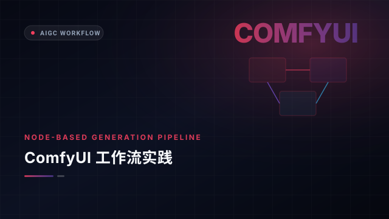

ComfyUI 工作流实践：把一次出图拆成能复用的节点
相比传统的表单式生图工具，ComfyUI 的节点式工作流能把出图过程拆成可视化的流水线。本文记录在 8GB 显存环境下编排 SDXL 工作流、控制显存峰值与模块化复用的实践经验。

局限：表单式生图与复杂流程复用的矛盾
单张试玩时，传统的表单界面（如 SD WebUI）足够直观；但进入多步串联或批量出图阶段（例如先控构图、再局部修复、最后高清放大），表单界面的短板就很明显：中间结果难以单独截取复用，整套多步流程也没法存成一份一键重跑的模板。
此外，在 8GB 显存显卡上跑体量较大的 SDXL 模型时，表单工具一旦爆显存往往只抛出底层报错，很难看清究竟卡在采样、放大还是解码环节。
方案：把生图拆成可视化的节点流水线
换成 ComfyUI 的节点式架构后，原本“填好参数点生成”的黑盒过程，被拆成了一条清晰的数据流水线：底模加载 → 提示词编码（CLIP） → 潜空间采样（KSampler） → 图像解码（VAE） → 后期放大与保存，每一步的中间输出都能直接查看。
实际搭建时重点做了三处模块化拆分：
- 画风模块独立插拔：把固定画风或角色特征作为独立 LoRA 节点挂在底模后，切换风格时直接替换节点或微调权重，不必反复大改提示词。
- 构图控制放在采样之前：在送入采样器（KSampler）前接入 ControlNet 节点，用线稿或姿态图提前锁死画面结构，减少成图后返工修图。
- 整套流程导出复用：把跑通的节点连线和参数直接保存为工作流 JSON 文件，方便版本备份与下次一键复现。
核心难点与工程排障
- 放大时机直接决定会不会爆显存。 8GB 显存跑 SDXL 若一上来就把初始潜空间分辨率拉得过高极易溢出；更稳的做法是先按 1024×1024 标准尺寸完成采样，再接后置放大或分块解码（Tiled VAE）。
- 避免模型权重重复载入。 多分支流程中应共用同一个底模和 VAE 加载节点，不要为了图省事各自新建加载器，否则一份模型会占掉多份显存。
- 统一模型目录与插件版本。 复用别人或自己以前的工作流时，最常遇到“红框缺节点”或找不到模型文件，平时尽量固定模型目录并记录关键插件版本。
- 理性评估采样步数回报率。 步数翻倍会带来耗时与耗电线性上升，但画面细节的提升边际递减；8GB 设备在 20~30 步区间内选取收敛步数即可。
- 先查瓶颈节点，再调参数。 遇到显存溢出报错时，优先检查初始分辨率是否过大，或临时断开末尾的高清放大、普通 VAE 解码等高显存节点定位元凶。
结论
用节点工作流跑 SDXL，最大的好处是出了问题能准确知道卡在哪一步。在 8GB 显存设备上，核心就是避免重复载入模型、先标准尺寸采样再后置放大；不必堆砌层层嵌套的复杂节点，流程清晰、稳定出图最重要。